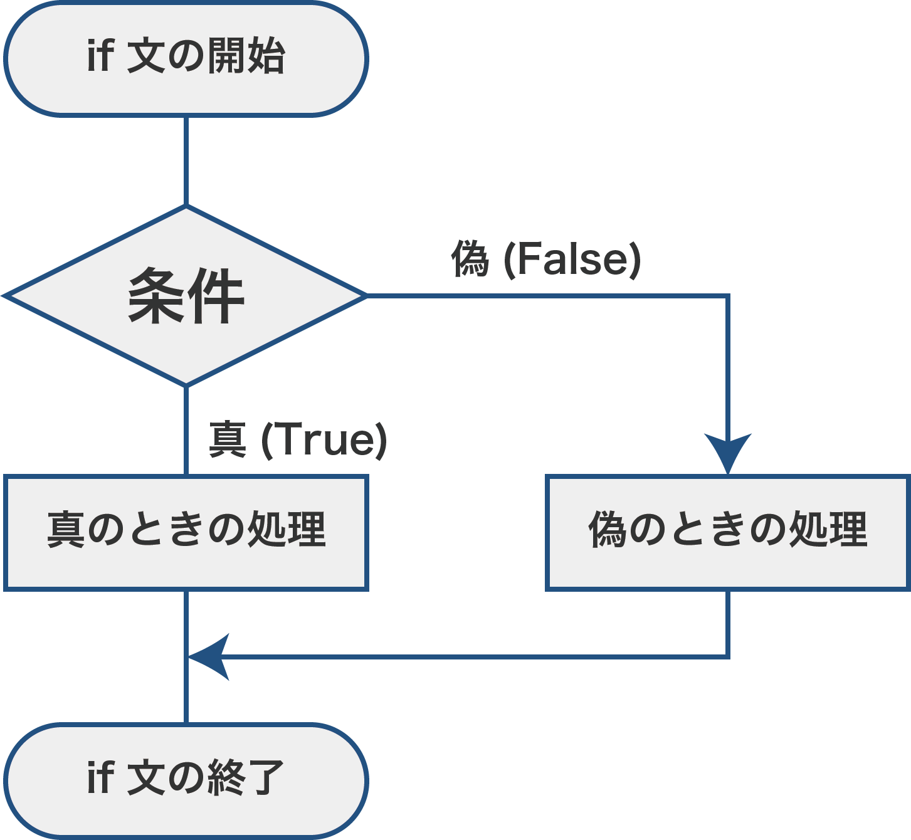

(1) if文の基本
条件分岐
条件に応じて実行する処理を分けることを条件分岐といいます。

if文の書き方
条件に応じて処理を分けるときには、次のif文を使います。
if 条件式:
# 条件が真のときの処理（インデントを下げる）
else:
# 条件が偽のときの処理（インデントを下げる）
if 条件式:の末尾にはコロン:をつけます。
次の行には、条件が真のときの処理を書きます。インデントが下がっているあいだは、条件が真のときの処理（if文の中ということ）をします。
その次の行はelse:と書き、さらにその次の行にはインデントを下げて、条件が偽のときの処理を書きます。インデントが下がっているあいだは、条件が偽のときの処理ということです。
Pythonでは、インデントレベル（深さ）の違いによって異なるグループとして扱われますので、プログラムを書くときや読むときにはインデントには十分に注意しましょう。
x = 3 # xに3を代入
if x > 0: # xが0より大きいとき
t = x**2 + 2 # xの2乗に2を加えてtに代入（条件が真のときの処理はインデントを下げる）
y = t / 2 # tを2で割ってyに代入（インデントが下がっているここまでが条件が真のときの処理）
else: # x>0ではないとき（xが0以下のとき）
t = 2 * x + 1 # xを2倍して1を加えてtに代入（条件が偽のときの処理はインデントを下げる）
y = t ** 2 # tを2乗してyに代入（インデントが下がっているここまでが条件が偽のときの処理）
# if文が一通り終わったら、１行あけると見やすくなる（あけなくても実行自体に影響はない）
print(y) # インデントが戻っているので、if文の条件分岐が終了している。
Pythonではインデントとして半角スペース４個分をを指定することが推奨されています。Google Colaboratoryでは初期設定がスペース２個分となっているので、ツール＞設定＞エディタ＞インデント幅（スペース）の値を「４」に変更することをオススメします。また、行頭でTab⇥を入力すれば、自動的にこの書式のインデントが挿入されます。また、インデントを戻すときは、Shift⇧＋Tab⇥で戻すことができます。
詳しくは、実習の始め方 - インデント幅の変更を参照してください。
年齢によって処理を分ける
次の例は、年齢を代入したint型変数ageを用意し、15歳未満なら「15歳未満です」と出力し、それ以外なら「15歳以上です」と出力するプログラムです。
age = 16 # ageに16を代入
if age < 15:
print("15歳未満です")
else:
print("15歳以上です") #（＝15歳未満ではありません）
15歳以上です
if文でよくあるエラー
SyntaxError
次のように、ifやelseの行末に「:(コロン)」がない場合は、SyntaxErrorとなります。
age = 16
if age < 15
print("15歳未満です")
else:
print("15歳以上です")
File "", line 3
if age < 15
^
SyntaxError: expected ':'
IndentationError
次のように、インデントが正しくない場合は、IndentationErrorとなります。
age = 16
if age < 15:
print("15歳未満です")
else:
print("15歳以上です")
File "", line 6
print("15歳以上です")
^
IndentationError: expected an indented block after 'else' statement on line 5